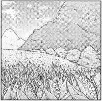

这个页面也太简洁了吧
好看好看，i了i了
世界如此可爱，灵梦如此好看
可爱捏~
由我组成弹幕:)
 |
人物名: | 博丽灵梦 | 英文名: | Hakurei Reimu |
| 种族: | 人类 | 职业: | 巫女 | |
| 能力 | ||||
|
操纵灵气的能力 在空中飞行程度的能力 主要拥有在空中飞翔程度的能力 发现空间的间隙，利用其创造结界 |
||||
有名的地点
|
永远亭 有一片常年被浓雾覆盖，可见度非常差的广阔竹林。竹子因为生长的很快所以无法被人们当成路标。因此一旦在竹林中迷路就很难再到达目的地。 永远亭就是由那种非同寻常构建而成的。在屋子里居住的月兔，月的装饰物。一切都是非同寻常的东西，也因此而拒绝时间的前进。据说就是因为这个原因，房屋的主人才将这座建筑物起名为永远亭。想体味非同寻常之感的人，可以偶而去造访那里看看。只不过，首先得保证不在竹林里迷路能正确的到达。 |
太阳花田 在夏天，往山的相反方向往幻想乡的深处走，会到达一片黄色、让人目眩的大草原。那里被称为太阳花田，黄色的正体是一大片向日葵田。 夜晚的向日葵田会成为有活力的妖怪们的夏天演唱会会场。加入到当中的话，会被大量妖怪 包围的 |
无缘塚 通过再思之道再往深处，尽头就是无缘塚。这里是个被众树包围的小地方，不过这里无论对人类还是妖怪来说，都是幻想乡中最危险的地方之一。 这里是没有亲人的人的墓地，不过因为常常有没有亲人的人从外面世界误闯进来，这里的比率逐渐开始向外面世界偏斜，结界变稀薄了。 |
三途河 众所周知的这是一条将此岸和彼岸分开的河 河被浓雾包围，无分日夜。不过雾里闪烁着光芒。河中突出很多长了苔藓的尖石，给人一种异世界的感觉。 游泳渡河是不可能的，要渡河只能乘坐死神的船。死神要求的渡河费用异常地高，事实上生者是无法过河的。 尤其是过河后，再也无法复活。没有生者会愿意过河吧。 |
|
妖怪之山 妖怪之山是很久以前起，就住着许多妖怪的地方，比人类更久远。通常，提到山的时候就是指这座妖怪之山。 山中的妖怪和人们、山下的妖怪不同，过着独立的社会，担任着幻想乡的一个重要的平衡点。 山中的妖怪比幻想乡的任何种族更开朗，更团结，伴随着先进的技术过着丰富的近未来生活。不过也因为强烈的同伴意识，对其他人也相当排斥。 所以，山中实际情况是充满了谜团。 |

无名之丘 在妖怪之山的对面有座很矮的山，在中腹有片绽开着大量铃兰的草原。不知为什么，这里并不为人所知。 至于这片铃兰草原为什么会被称为无名之丘，那是因为以前这里是丢弃之地 没有名字的婴儿被丢弃在有毒的铃兰丛中，沉睡着死去。尸体会被妖怪吃掉，消灭得一干二净。 也有传言说这里的婴儿会被喜欢恶作剧的妖怪带走养大。身为父母不想见到自己的孩子死掉的情景，心想若丢在这里，说不定能变成妖怪而活下去。真是悲伤的故事。 因为有着这么黑暗的过去，现在几乎没有人类接近这地方。后来妖怪也不来了，现在此地成了被幻想乡遗忘之地，是为“无名” |
迷途竹林 从人类村落处看，妖怪之山的反方向有一片广阔的竹林，那就是迷途竹林。 竹林中没有什么醒目的标志，再加上竹子成长飞快，景色变动，的确很容易迷路。 竹林不但广阔，而且地面有点倾斜，竹子斜斜地生长，令人失去平衡感。本来打算一直走也会在不觉间回到原处。 而且这里也是妖怪喜欢聚集的地方，普通人是不该来的 不管怎样，除了对这片竹林熟悉的伐竹人以外，最好还是不要踏入较好。 |
雾雨邸 位于魔法森林某处的一间屋子，雾雨魔理沙居住在这里，平常在家中钻研魔法。 也是魔理沙经营的雾雨魔法店所在地，实际上她的家就是店铺。 雾雨魔法店实际上类似于万事屋，可以委托多种内容，不过魔理沙经常外出找不到人。 委托内容包括赌博预言、异变解决、妖怪退治、宝物探索等。成功的话就拿下报酬，失败的话则一文不取，据说是挺可靠的。 |
出色的同人作品
东方幻想万华镜
本动画并非东方的官方动画化，亦不是商业动画
这是一个充满幻想的世界，人类，妖精，妖怪，神明，这些看似无法共存的种族都幸福的生活在这个幻想乡之中
在这个奇幻千姿百态的世界之中，一场灾难突然袭来，各地突然出现的“神隐”现象使每一个幻想乡之中的居民都活在梦魇之中，为了对抗这场噩梦，我们的四个主人公展开了全面的调查，这奇怪的气氛究竟意味着什么？
东方梦想夏乡
简称“梦想夏乡”，是一部由同人社团舞风（MAIKAZE）制作的东方Project二次同人动画。2008年12月29日，《东方梦想夏郷》第一话在C75首发
因为更新时间间隔太长，迄今为止每四年更新一次，所以也被称为“奥运番”。
东方幼灵梦
“这是灵梦尚幼，食人妖怪尚大时的故事。——并且，还是未曾向他人道述过的巫女 的故事。”
不管是画风还是故事情节，都让人感到"十分的温馨"和令人感慨，故事的后期发展也会出乎意料。
关于幻想乡
幻想乡
幻想乡在过去是被称为「东之国远离人类村落的边境之地」的场所
虽说如此，普通的手段是无法往来于幻想乡内外的，因为这里被常识的结界「博丽大结界」所隔断。
要说幻想乡有什么特别之处，那自然是——在现实中被视为「非常识」、「不存在」的妖怪、神明、魔法等等幻想，在这里都是理所当然的东西。被否定、被遗忘、成为幻想之物的归宿，那就是幻想乡.
在这里，人类仍然敬畏神明，仍然谈论着魍魉魑魅。巫女能在空中飞行也好、吸血鬼释放出血红雾气也好、冬天和夜晚不会结束也好、某位圣人突然复活也好…… 妖怪等非人之物掀起异变、人类中的英雄前去应对，这便是幻想乡的日常。